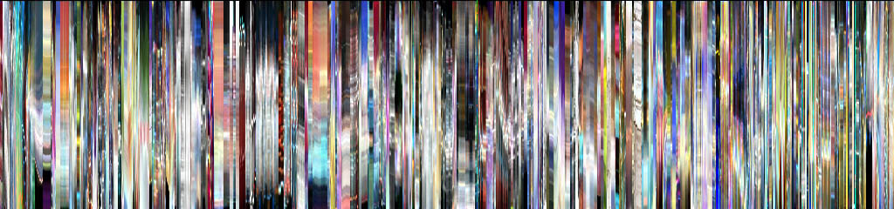

4. Visualisering av bevegelse#
Dette kapitlet presenterer forskjellige former for visualisering av bevegelse, blant annet bevegelsesbilder, bevegelseshistoriebilder og bevegelseskurver.
Fotografiske metoder#
I forrige kapittel så vi på hvordan bevegelser kan registreres og lagres ved hjelp av forskjellige systemer. Det er mulig å spille av et slikt opptak og få en gjengivelse av den opprinnelige bevegelsen. En slik avspilling er imidlertid ikke spesielt godt egnet til sammenligning og representasjon av større mengder bevegelsesmateriale. Det gjelder dermed å finne én eller flere metoder for å visualisere bevegelser slik at de kan brukes til analyse og dokumentasjon.
Stillbilder, i form av fotografier eller et utsnitt fra en bevegelsessekvens, kan i noen tilfeller være en effektiv måte å representere en bevegelse på. Selv om et stillbilde bare viser en liten del av et bevegelsesforløp, kan det i noen tilfeller være nok intern dynamikk i et bilde til at man kan få en forståelse av bevegelsene som ble utført før og etter at bildet ble tatt. Ofte vil det allikevel være ønskelig å kunne vise hvordan bevegelsen utfoldet seg i både tid og rom, og da må man bruke andre representasjonsformer. I dette kapitlet skal vi se nærmere på forskjellige visualiseringsteknikker og hvordan de kan brukes for å studere musikkrelaterte bevegelser.
I forbindelse med utviklingen av fotografiet i andre halvdel av 1800-tallet ble det eksperimentert med ulike visualiseringsteknikker. Den britisk-amerikanske fotografen og bevegelsesforskeren Eadweard James Muybridge (1830–1904) er en av de tidlige pionerene på feltet med sine fotografier av hvordan dyr beveger seg. Han er særlig kjent for sine hestefotografier. På 1870-tallet kunne han vise at en hest i galopp har perioder der alle hovene er i luften samtidig, som vist i figur 12. Teknikken han brukte, ble kalt tidsseriefotografier. Han satte opp en rekke med kameraer med en lukkertid på 1/500 sekund. Utløsermekanismen i kameraene var koblet til kabler som var strukket over banen der hesten løp, slik at hesten utløste kameraet idet den passerte (Mozley, 1972). På den måten ble det tatt en serie med fotografier rett etter hverandre som til sammen gir en oversiktlig representasjon av bevegelsessekvensen.
På samme tid som Muybridge utførte sine fotografiske eksperimenter i California, holdt Étienne-Jules Marey (også 1830–1904) på med lignende studier i Paris. Han utviklet en teknikk som han kalte kronofotografi, eller ”bilder av tid”. En slik teknikk er strobofotografi, som er basert på å gjøre flere belysninger på den samme fotografiske platen. Hvis da personen eller dyret er i bevegelse, vil man kunne se denne bevegelsen i det endelige fotografiet. Et eksempel på et slikt strobofotografi av en flygende pelikan kan ses i figur 13 (Braun 1992).
Marey utviklet flere andre teknikker for å visualisere bevegelse i fotografiene. Én av disse kan ses i fotografiet av en gående mann i figur 14. Mannen har på seg en svart drakt med små refleksstriper på siden av drakten (Blake og Shiffrar 2007). Med sterk belysning vil disse stripene lyse opp, og bli synlige som striper når det gjøres mange eksponeringer etter hverandre på den samme fotografiske platen. På samme måte som i pelikanbildet er det mulig å få en fornemmelse av hvordan bevegelsen utfolder seg i både tid og rom.
Nesten hundre år etter Mareys eksperimentering med strobofotografi brukte den svenske psykologen Gunnar Johansson (1973) en lignende teknikk når han laget sine punktlysvideoer. Han festet reflekspunkter på forskjellige ledd på kroppen til forsøkspersonen og gjorde videoopptak med høy kontrast slik at bare punktene syntes. Ved det viste han hvordan vi oppfatter en redusert kinematisk representasjon av bevegelse. Denne teknikken har senere blitt brukt i en rekke forskjellige studier av bevegelse og menneskelig atferd, og har blitt videreført i moderne optisk-visuelle bevegelsessporingssystemer (se kapittel 3).
Videoanalyse#
De forskjellige bevegelsessporingssystemene introdusert i kapittel 3 kan ta opp bevegelser som tall som kan plottes i en graf, eller brukes i statistisk analyse. Ett av problemene med en slik representasjon av bevegelser er imidlertid at de er basert på målinger av bestemte punkter på kroppen. Dette kan være hensiktsmessig hvis man ønsker å studere hvordan en bestemt kroppsdel beveger seg, eller hvordan bestemte ledd beveger seg i forhold til hverandre. Et videoopptak fanger derimot inn helheten, og selv om man bare får med to dimensjoner, og oppløsning og presisjon er lavere enn for andre bevegelsessporingssystemer, kan video være et nyttig redskap for å forstå mer av bevegelsen. De forskjellige visualiseringsteknikkene utviklet av Muybridge og Marey viser at fotografi eller video kan brukes til å studere forskjellige bevegelseskvaliteter. I resten av dette kapitlet skal vi se på forskjellige former for videoanalyse og visualisering av bevegelse fra et videomateriale.
Det har ingen hensikt å gå inn på spesifikk programvare her, siden utviklingen går så raskt at det ikke er mulig å gi en oppdatert oversikt. Det finnes imidlertid mange forskjellige programvarepakker tilgjengelig som muliggjør analyse fra et videomateriale. Generelt kan vi dele inn den programvaren som finnes i følgende kategorier:
Overvåking: Det finnes en rekke programmer som tar opp video og gjør enkel kvantitativ videoanalyse basert på bevegelse. Slik programvare brukes til overvåking av for eksempel trafikkflyt og butikker.
Sport og rehabilitering: Her er målet å finne måter å visualisere bevegelsen på slik at man kan se på endringer over tid og arbeide mot optimalisering av bevegelsene.
Annotasjon: Dette er ofte beregnet på kvalitative observasjonsstudier, gjerne av atferd hos barn og voksne. Slike programmer gir muligheten til å spille av en videofil og skrive inn tekst langs en tidslinje.
Programmering: Dette er åpne programløsninger som gjør det mulig å sette sammen forskjellige moduler for å skape et eget analyseprogram.
De to første kategoriene fokuserer hovedsakelig på kvantitative analyser, der målet er å få ut en tallbasert representasjon for videre behandling. Annotasjonsprogramvaren er ofte beregnet på kvalitative studier der kommentarer skrives ned mens man observerer en video. Den siste kategorien er den som er mest fleksibel, men den krever også at brukeren kjenner til noe programmering, for eksempel utviklingsverktøyene Matlab, Max/MSP/Jitter eller EyesWeb.
Alle disse programvarekategoriene kan være relevante å bruke i musikalsk sammenheng. Den største utfordringen er vanligvis å finne ut av hvordan man kan synkronisere forskjellige typer media og data. Ettersom de færreste analyseverktøyene som finnes er laget med tanke på musikalske anvendelser, er det også ofte dårlig støtte for lyd. For studier av musikk er det nødvendig at audio og video kan høres og ses samtidig, og at de er synkronisert. Tilsvarende kan det også være nyttig å kunne koble dette til en tradisjonell notasjonsform. Det har blitt utviklet flere forskjellige programvarepakker for analyse av musikkrelaterte bevegelser, slik som Camurri et al. (1999, 2004) og Jensenius et al. (2005). Noe av funksjonaliteten i disse programmene vil bli beskrevet i resten av dette kapitlet.
Digital video#
Før vi ser på forskjellige analyse- og visualiseringsmetoder kan det være på sin plass å gi en kort innføring i digital video. På samme måte som en gammel filmrull er også en digital videofil en samling med stillbilder som spilles av etter hverandre. Hvis bildene spilles av med en hastighet på omtrent 25 bilder per sekund eller raskere, vil dette oppfattes som at bildet beveger seg (se figur 15). Hvert av disse bildene har en bestemt størrelse, og denne størrelsen angis gjerne i antall unike punkter eller piksler som finnes i høyden og bredden av bildet. Et bilde som oppgis til å ha 640 x 480 piksler, har da totalt 307 200 piksler. Det har lenge vært vanlig at fotografier, videobilder, TV- og dataskjermer var basert på forholdet 4:3. Nå har det blitt mer og mer vanlig å bruke andre forhold, og særlig bredformatet med forhold 16:9 har blitt standard i mange sammenhenger.
For å forstå hvordan man kan manipulere og analysere videofiler, er det viktig å huske på at et digitalt bilde egentlig bare er en samling av tall, det som gjerne kalles en matrise. Hvis vi bruker farger, består matrisen av fire plan. Hvert av disse planene inneholder en fargekomponent, og vanligvis er dette organisert med koden ARGB som står for alfa, rød, grønn og blå (se figur 15). Alfa-planet brukes til å definere gjennomsiktighet i bildet, mens hvert av de andre planene definerer hvor mye det er av den bestemte fargekomponenten i det endelige bildet. På samme måte som når man maler med farger er det blandingen av de forskjellige primærfargene som gir den endelige fargen vi opplever i et digitalt videobilde.
Oppløsningen til et bilde er også viktig. På samme måte som man snakker om at lyd gjerne registreres med 16-bits oppløsning, er det vanlig å registrere video med 8-bits oppløsning. Det vil si at hver piksel i hvert plan måles med en verdi som ligger mellom 0 og 255, der 0 er helt svart, og 255 er full fargegjengivelse. Det er mulig å lagre video med høyere oppløsning, men dette gjør at filstørrelsen øker tilsvarende, så her gjelder det å finne en balanse mellom tilfredsstillende oppløsning og lav filstørrelse.
Det siste begrepet som det er viktig å tenke på i arbeidet med video, er hastighet. Det er denne som definerer hvor fort bildene spilles av. I Europa brukes det en standard som heter PAL, og denne spilles av med 25 bilder per sekund. I USA og Japan brukes NTSC som spilles av med 30 bilder per sekund. High Definition Video (HDV) spilles av med 60 bilder per sekund.
Alle de nevnte faktorene (størrelse, plan, oppløsning og hastighet) er med på å påvirke filstørrelsen og hastigheten som avspilling og analyse kan gjøres i. Det finnes ingen regler for hva som er best, og man må gjerne prøve seg litt frem for å finne innstillinger som passer til ens eget bruk. Hvis man er interessert i å studere raske bevegelser, kan det være best å investere i et høyhastighetskamera og lagre filer med høy hastighet og lavere oppløsning. Hvis derimot et objekts plassering i rommet er viktig, kan det være verdt å ofre litt av hastigheten for å få en høyere oppløsning.
Alle som har forsøkt å eksportere en videofil fra et videoredigeringsprogram, vet at det finnes en rekke forskjellige formater å velge mellom. Man kan velge mellom å lagre i et format som bevarer all den opprinnelige informasjonen, eller et format som komprimerer videomaterialet. Best resultat får man ved å ikke komprimere, men det resulterer også i store datafiler. Valget må derfor gjøres på bakgrunn av hvor mye materiale man har, lagringskapasitet og kvaliteten man ønsker på analysen. Mange av komprimeringsstandardene har nå blitt så bra at det ikke blir merkbare forskjeller i analysen når man bruker komprimert videomateriale.
Generelt kan vi si at det finnes to hovedtyper av komprimering: temporal og spatial komprimering. Komprimeringsstandarder slik som MPEG-1, MPEG-2 og MPEG-4 er basert på temporal komprimering. Det betyr at man ser på forandringer mellom rammene i bildet over tid, og fjerner den informasjonen som er lik mellom rammene. Dette er den mest effektive formen for komprimering og gir også ofte et godt visuelt resultat. For analysebruk er imidlertid en slik komprimering ikke ideell. Mange av de mest vanlige videoanalysemetodene bruker nettopp endringen mellom rammer som utgangspunkt for analysen. Hvis komprimeringen allerede har fjernet mye informasjon fra videostrømmen, vil dette også kunne påvirke analyseresultatet.
For analyse er det ofte bedre å bruke en spatial komprimering som for eksempel Motion JPEG. Dette er et format som komprimerer hvert enkelt bilde separat. Det resulterer i større filer enn om man bruker temporal komprimering, men allikevel mye mindre enn ved ukomprimert video. En videofil med spatial komprimering er bedre egnet for å søke frem og tilbake, og å gjøre forskjellige typer bevegelsesanalyser.
Legg merke til at formater som QuickTime (.mov) og Audio Video Interleave (.avi) ikke sier noe om komprimeringen som er brukt. Disse formatene er bare en ”boks” som kan lagre video med mange forskjellige typer komprimeringer.
Videoopptak#
Hvis man gjør videoopptak som skal brukes til dokumentasjon av musikk står man ganske fritt i forhold til kameraføring, vinkler og komposisjon. Da kan man jobbe med å fortelle en historie av det som skjer gjennom kameraet. Hvis materialet derimot skal brukes til systematisk analyse er det flere momenter man bør tenke over før man begynner opptaket. Det er ikke plass til å gi en utførlig beskrivelse av alle disse momentene her, men vi skal gå gjennom noe av det som er viktig å huske på når man gjør opptak som skal brukes i analyse.
Stativ: Bruk alltid stativ. Videomateriale tatt opp med håndholdt kamera blir sjelden bra, og kan være vanskelig å bruke i senere analyser. Det er bedre å bruke et ordentlig stativ slik at man er sikker på å få et stødig bilde uten bevegelse i selve bildet.
Kamera: Bruk det beste kameraet du har tilgang til, og gjerne flere. Ofte kan det være fint å gjøre opptak både forfra og fra siden. Hvis man gjør opptak med flere kameraer, kan opptakene synkroniseres ved å klappe på begynnelsen av opptaket. Da kan man senere sammenstille opptakene i et redigeringsprogram ved å lytte etter klappet. Det er ofte mest stabilt å gjøre opptak på kassett eller minnekort i kameraet, men ettersom datamaskiner hele tiden blir raskere og får større lagringskapasitet, kan det være et alternativ å ta opp video direkte på maskinen.
Zooming: Hovedregelen er å zoome inn så mye som mulig på det man ønsker å studere. Hvis man bare er opptatt av overkroppen til en pianist, er det ikke nødvendig å filme føttene og hele flygelet. Ved å få et så nært bilde som mulig er det større sjanse for å få med seg detaljer, samt å fjerne unødvendig informasjon fra bildet. Men husk at musikere og dansere ofte flytter seg rundt på scenen; tenk derfor gjennom opptaket på forhånd for å få med det som ønskes i bildet. Om man velger å stille inn kameraet slik at det dekker hele scenen, eller velger å zoome inn på ett bestemt område, avhenger av hva man ønsker å observere. Som nevnt over er det ikke ideelt å flytte kameraet for mye frem og tilbake ettersom det kan gjøre det vanskelig å analysere materialet. En løsning kan være å bruke to kameraer, ett som tar helheten og ett som brukes til nærbilder.
Orientering: Tenk over hvilken orientering kameraet skal ha. Hvis man skal filme personer som står oppreist, kan det lønne seg å snu kameraet 90 grader, slik at man kan utnytte høyden i bildet. Det er mulig å snu på bildet i mange videoprogrammer slik at det blir riktig på skjermen til slutt.
Autofokus: Hvis det er mulig å skru av autofokus på kameraet, vil det ofte være best. De fleste nye kameraer har en autofokus-funksjon som fungerer veldig bra. Problemet er at kameraet hele tiden vil forsøke å finne et fokuspunkt på det som til enhver tid befinner seg midt i bildet. Hvis man filmer en musiker som beveger seg litt frem og tilbake i bildet kan man risikere at kameraet hele tiden flytter fokus mellom forgrunn og bakgrunn. Dette er plagsomt for øyet, og det vanskeliggjør analysearbeidet. Hvis det er mulig kan det være best å sette fokus manuelt på ett punkt på scenen, der man vet at mesteparten av bevegelsene kommer til å skje.
Lys: De fleste har ikke tilgang på profesjonelt studiolys, men det kan allikevel være lurt å tenke på lyssettingen når man skal gjøre et videoopptak. Hovedregelen er å bruke alt det lyset man har, men pass på at det blir jevnt. Har du bare én stor lampe, så sett den slik at lyset kommer mest mulig forfra. Har du tilgang på to lamper, kan det være lurt å sette dem på hver sin side av personen som skal filmes. Da vil personen bli godt synlig, samtidig som skygger i bakgrunnen forsvinner. ”Kreativ” lyssetting er ikke tingen når man ønsker å gjøre videoanalyse, målet er å få frem mest mulig detaljer. Pass for øvrig på at det ikke blir for mye skygge på gulvet eller veggen bak personen ettersom dette også kan være med på å påvirke analyseresultatet.
Bakgrunn: Man bør forsøke å få til en så nøytral bakgrunn som mulig. Det viktigste er å unngå bevegelige elementer i bakgrunnen, for eksempel personer som går forbi. Det kan også være lurt å unngå en bakgrunn med mye visuell ”støy”, for eksempel en bokhylle. Det beste er å bruke en ensfarget vegg som bakgrunn, eller spenne opp et lerret eller laken. Fargen betyr ikke så mye, men det blir mindre skygger på en mørk bakgrunn, så et svart lerret eller sceneteppe kan være et godt alternativ. Hvis man har mulighet til det, kan det være smart å filme litt av bakgrunnen i noen sekunder før man begynner selve opptaket. Et slikt bakgrunnsbilde kan brukes til å fjerne bakgrunnen i et videoanalyseprogram.
Etter å ha gjort et videoopptak er neste skritt å få materialet inn på en datamaskin. Denne prosessen avhenger av kameratype og opptaksmåte, og er vanligvis godt beskrevet i manualene som følger med utstyret. Deretter kan det lønne seg å klippe til videofiler og navngi dem slik at det er enkelt å finne frem til det man ønsker. I denne forbindelse er det lurt å etterbehandle videomaterialet før man går i gang med analysen. Det er en rekke forskjellige metoder for dette, men her vil vi bare se på noen av de viktigste metodene.
Kontrast og lysstyrke: Det er en fordel å ha en best mulig balanse mellom de mørkeste og lyseste delene av bildet. De fleste videokameraer stiller inn dette automatisk ved opptak, men det kan være nødvendig å justere dette litt når man ser det endelige opptaket på skjermen. Særlig gjelder dette hvis man har gjort opptak i et mørkt lokale, for eksempel under en konsert, og trenger å få justert bildet slik at det fremstår lysere.
Farger: Det er mulig å justere fargebalansen i bildet hvis opptaket av en eller annen grunn fremstår med andre farger enn det man husker fra opptakssituasjonen. Tilsvarende kan man velge å justere fargemetningen i bildet, slik at man får enten svakere eller sterkere farger. Hvis man ikke skal bruke fargeinformasjonen i analysen, kan man vurdere å lagre videoen i gråtoner. Dette resulterer i mindre videofiler, raskere prosessering og ofte et bedre visuelt resultat, noe som igjen gir bedre analyse.
Beskjæring: Ofte viser det seg at man ikke har zoomet inn nok på personen man ønsker å observere. Da kan det være en fordel å gjøre dette i ettertid ved å beskjære bildet digitalt før man går videre med analysen.
I dette avsnittet er det vist hvordan man kan gjøre et godt videoopptak, og hvordan man i etterkant kan behandle bildet slik at det er best mulig egnet for videre analyse. I de etterfølgende avsnittene skal vi se på forskjellige metoder for å visualisere og analysere et digitalt videomateriale.
Tidsseriebilder#
Ettersom vi omgir oss med stadig større mengder digital video, har det blitt viktig å utvikle teknikker for å presentere innholdet i videomaterialet på en enkel og oversiktlig måte. I første omgang er målet å få en oversikt over materialet som er samlet inn. Da kan man bruke tidsseriebilder som viser stillbilder trukket ut fra videoen langs en tidslinje. Teknikken minner om Muybridges tidsseriefotografier, og vil kunne gi en idé om bevegelsene i sekvensen. Tidsseriebilder er tilgjengelig i de fleste videoredigeringsverktøy, og gir brukeren mulighet til å navigere frem og tilbake i materialet.
Figur 16 viser et tidsseriebilde av de første 32 sekundene av en bevegelsessekvens hvor en danser beveger seg fritt til musikk. Dette eksemplet er hentet fra et videoopptak av en observasjonsstudie av fridans til musikk som blir nærmere beskrevet i kapittel 6. Vi vil bruke denne videoen som utgangspunkt for mange av eksemplene i dette kapitlet. I tidsseriebildet i figur 16 er det hentet ut ett stillbilde for annethvert sekund av sekvensen. Der hvor danseren står stille, slik som i begynnelsen av sekvensen, får vi flere bilder som er tilnærmet like. Her kunne man med fordel ha brukt et enda lengre tidsintervall mellom bildene for å få inn mer informasjon i tidsseriebildet. Tilsvarende ser vi at det kunne vært en fordel å ha et raskere oppdateringsintervall i de partiene der det er raske bevegelser.
Et alternativ til slike tidsseriebilder er hendelsesseriebilder. Istedenfor å plukke ut bilder basert på tid, er et hendelsesseriebilde laget ved å trekke ut bilder basert på hvor stor endring det er mellom bildene (Teodosio og Bender 1993). Et eksempel på et hendelsesseriebilde av fridans til musikk, er vist i figur 17. I dette hendelsesseriebildet vises flere enkeltbilder fra den delen av sekvensen der det er stor forandring i bevegelsene, og færre enkeltbilder der det er lite forandring. Et slikt hendelsesseriebilde er på mange måter mer interessant enn et tidsseriebilde ettersom man ser mer av bevegelsesinnholdet i sekvensen. Et problem er imidlertid at man mister følelsen av tid når bildene ikke følger en bestemt tidskode. Vi ser altså de viktigste stillbildene, men klarer ikke å se for oss hvordan disse utfoldet seg i tiden.
Det har blitt utviklet flere metoder for å lage sammensatte hendelsesseriebilder. Uchihashi et al. (1999) utviklet en metode for å sette sammen en tegneserielignende fremstilling av en videosekvens. Dette ble gjort ved å tilpasse størrelsen på hvert av enkeltbildene som var med i sekvensen etter hvor stor betydning dette utsnittet hadde i helheten. Girgensohn et al. (2001) utviklet en metode for å lage hierarkiske oversikter over bildesekvenser. Dette gjør at man kan manøvrere i en videofil ved å velge det hierarkiske nivået man ønsker. Begge disse metodene er imidlertid basert på uttrekk av statiske bilder fra en videosekvens, og gir ingen informasjon om bevegelsen som skjer i og mellom bilderammene.
En metode som i større grad fokuserer på å visualisere bevegelser som skjer i et videomateriale er de automatiske storyboards utviklet av Niikura et al. (1999) og Goldman et al. (2006). Her lager datamaskinen ett oppsummeringsbilde fra en videosekvens, hvor kameraforflytning og personers bevegelser er tegnet inn med piler. Resultatet er en visualiseringsform av videomaterialet som i stor grad tar hensyn til bevegelsesinnholdet. I de etterfølgende avsnittene skal vi se på forskjellige teknikker hvor bevegelse i bildet ligger til grunn for visualiseringen.
Bevegelsesbilder#
En metode for å vise bevegelser i et videomateriale er å lage en video med bevegelsesbilder. Ettersom en video er bygget opp av enkeltbilder, som igjen består av tallmatriser, er det mulig å gjøre forskjellige matematiske operasjoner på disse bildene. Et bevegelsesbilde er laget ved å subtrahere ett bilde fra det foregående bildet. Da ender man opp med et bilde der bare de pikslene som er forskjellige mellom de to subtraherte bildene, synes. Et eksempel på et slikt bevegelsesbilde kan ses i figur 18.
Ofte vil et ubehandlet bevegelsesbilde inneholde visuell ”støy” i form av enkeltstående piksler i bildet. Dette kommer av endringer i lys eller problemer med komprimering i videoen. Det er flere måter å redusere slik støy i et bevegelsesbilde på. Én måte er ved å preprosessere den originale videoen ved å justere kontraster og farger slik at man får et renere originalbilde. En annen måte er ved å postprosessere bevegelsesbildet med et filter som fjerner enslige piksler. Et eksempel på forskjellige typer filtrering er vist i figur 19.

Senere skal vi se på hvordan det er mulig å bruke bevegelsesbilder som utgangspunkt for kvantitativ analyse. Bevegelsesbilder kan også være interessante å bruke som utgangspunkt for observasjon og kvalitativ analyse. Én av fordelene med å se på et bevegelsesbilde fremfor den originale videoen er at man lettere kan legge merke til hvor i bildet bevegelsen skjer.
Bevegelseshistoriebilder#
Et bevegelsesbilde viser endringen mellom to bilder i en videostrøm, men det er også mulig å lage bevegelseshistoriebilder som viser endringen av flere bilder fra en sekvens (Camurri et al. 2003). Én måte å gjøre dette på er ved å bruke video-feedback, der ett bevegelsesbilde multipliseres med en faktor og legges til det neste bildet som kommer i sekvensen. Dette skaper en ”hale” på bevegelsen som effektivt viser hvordan bevegelsen har utviklet seg over tid. Eksempler på noen forskjellige typer bevegelseshistoriebilder er vist i figur 20 (videoeksempel).
En annen måte å lage slike bevegelseshistoriebilder på er ved å bruke en teknikk som minner om Mareys strobofotografi (se figur 13). Istedenfor å bruke feedback til å skape bevegelseshistorien, plukker man ut enkeltbilder fra videostrømmen som settes sammen til ett bilde. Antallet enkeltbilder som tas med, og hvor stor tidsavstand det er mellom dem, vil avgjøre hvordan bevegelseshistoriebildet ser ut. Eksempler på slike bevegelseshistoriebilder er vist i figur 21 (videoeksempel). Her er det også brukt et kantdeteksjonsfilter som finner omrisset til danserens kropp. Resultatet er at man ser en stilisert utgave av kroppen i tillegg til spor av bevegelsen.
En av utfordringene når man lager et bevegelseshistoriebilde, er å finne det riktige tidsvinduet til bevegelseshistorien. Med tidsvindu menes her den lengden i tid som analysen gjøres over. Hvis tidsvinduet er stort, vil man få med mer av bevegelsen, men man vil også oppleve at man mister detaljer ettersom bildet blir mer diffust. Dette er spesielt merkbart hvis det er mye bevegelse i sekvensen, slik man ser i noen av eksemplene i figur 20. Tilsvarende vil et for lite vindu kunne gi liten visuell effekt ettersom man ikke rekker å få med særlig mye av historien. En løsning på dette problemet kan være å justere lengden på tidsvinduet etter hvor mye bevegelse det er i bildet. Problemet er da at man ikke vil ha noe referansepunkt ettersom tidsenheten for bevegelseshistorien hele tiden forandrer seg. Ofte er den beste løsningen å prøve seg frem til man finner et tidsvindu som passer til materialet man studerer.
Erfaringsmessig egner bevegelseshistoriebilder seg best til å visualisere korte bevegelsessekvenser på opp til ti sekunder. Utover dette blir bildene vanskelige å tolke hvis det er mye bevegelse i sekvensen. En metode for å visualisere lengre bevegelsessekvenser kan være å lage tidsseriebilder hvor flere bevegelseshistoriebilder vises etter hverandre langs en tidslinje. Ett av problemene med tidsseriebilder laget fra den vanlige videostrømmen, er at man ikke visualiserer selve bevegelsen, men bare stillbilder fra videomaterialet. Hvis man derimot bruker bevegelseshistoriebilder som utgangspunkt for tidsseriebildet, vil man kunne få begge deler, både en visualisering av bevegelsen i bildet og en synliggjøring av hvordan bevegelsene utvikler seg over tid. Et eksempel på dette er vist i figur 22. Istedenfor å bare vise statisk informasjon om danserens posisjoner (se figur 16 og 17) ser man her hvordan hun faktisk beveger seg.

Ved å kombinere flere bevegelseshistoriebilder i ett bilde er det mulig å gjøre studier der man sammenligner ulike bevegelsesmønstre. Figur 23 (video) viser et eksempel på en fremstilling av tre dansere som beveger seg til det samme lydmaterialet.
I dette avsnittet er det vist hvordan bevegelsesbilder, bevegelseshistoriebilder og tidsserier av bevegelseshistoriebilder kan være praktiske visualiseringsformer for å vise bevegelser fra et videomateriale. Problemet er at ingen av disse metodene viser hvordan bevegelsene utvikler seg over lengre tidsstrekk. For lengre sekvenser kan det derfor være bedre å se på andre visualiseringsformer. I neste avsnitt skal vi se nærmere på en slik metode, nemlig bevegelseskurver.
Bevegelseskurver#
Når vi arbeider med lydanalyse, er det vanlig å visualisere lydsignalet ved hjelp av bølgeformer eller spektrogrammer, slik som vist i figur 24. Bølgeformen viser hvordan amplituden til lyden forandrer seg over tid, og kan derfor brukes til å fortelle noe om hvordan lydstyrken endrer seg. Spektrogrammet gir på den andre siden informasjon om frekvensinnholdet i lyden, noe som kan brukes for å se på hvordan grunntonen og klangfargen til lyden endrer seg. Til sammen gjør disse to visualiseringsformene det mulig å få en oversikt over den kontinuerlige utviklingen av en lyd over tid.
Bevegelseskurver er en teknikk for å lage en tidsbasert fremstilling av et videomateriale med utgangspunkt i bevegelsesbilder (Jensenius 2006). Denne teknikken er inspirert av Mareys strobofotografier, og reduserer videostrømmen slik som vist i figur 25. Metoden tar utgangspunkt i at et videobilde er en matrise med størrelse M x N. M angir her antall kolonner, og N angir antall rader i matrisen. For eksempel vil et bilde med 640 x 480 piksler ha M = 640 og N = 480. For en horisontal bevegelseskurve begynner man med å regne ut gjennomsnittsverdien for hver rad i matrisen. Dette gir en ny matrise med størrelsen 1 x N, altså én piksel bred, og N piksler høy. Hvert punkt i denne matrisen kan ses på som en reduksjon av hver rad i bevegelsesbildet. Når disse 1 x N-matrisene settes etter hverandre, får man en representasjon av bevegelsen over tid. Tilsvarende vil man kunne lage en vertikal bevegelseskurve ved å beregne gjennomsnittsverdien for hver kolonne i matrisen; det gir en M x 1-matrise som kan vises over tid.
Én måte å se bevegelseskurvene på er at man trykker sammen hvert bevegelsesbilde i en videosekvens til en tynn stripe som så settes sammen over tid. Legg merke til at man ”mister” én dimensjon i denne prosessen. For en horisontal bevegelseskurve blir bare den vertikale bevegelsen representert, og tilsvarende vil man for en vertikal bevegelseskurve bare få en representasjon av den horisontale bevegelsen. Derfor er det viktig å tenke gjennom i hvilken retning bevegelsene i videoen utføres. Hvis det er mye horisontal bevegelse, bør man lage en vertikal bevegelseskurve, og hvis det er mye vertikal bevegelse, bør man lage en horisontal bevegelseskurve. Er man usikker, er det mulig å lage både horisontale og vertikale bevegelseskurver, for etterpå å velge én eller begge for videre analyse.
På samme måte som man må lære seg å tolke spektrogrammer av lyd, tar det gjerne noe tid å venne seg til hva en bevegelseskurve representerer. Bevegelseskurven i figur 26 er laget med utgangspunkt i en video av fem minutter med dansebevegelser til musikk. Her løper tiden fra venstre mot høyre, det vil si at begynnelsen av sekvensen er representert til venstre og slutten til høyre. Ettersom dette er en horisontal bevegelseskurve, viser den danserens vertikale bevegelse. Det vil si at håndbevegelser som går opp og ned vil komme tydelig frem som kurver som beveger seg opp og ned i bildet. Hvis hendene derimot bare beveger seg ut til siden vil dette ikke være synlig i bildet, bortsett fra at man kan se at det er aktivitet i det området hvor hendene beveger seg.
For å orientere seg i en bevegelseskurve kan det være lurt å se etter hvor det ikke er bevegelser, altså der hvor det er hvitt i bildet. Videoen som figur 26 er laget fra, er en dansesekvens på totalt fem minutter og består av fem forskjellige musikalske utsnitt som hver er repetert tre ganger. Ved å se nøye på bevegelseskurven er det mulig å identifisere både de fem forskjellige musikalske utsnittene, som i figuren også er markert med vertikale hvite streker, samt de tre repetisjonene for hvert utsnitt. Med litt trening er det enkelt å se dette direkte fra bevegelseskurven, og det er også mulig å se forskjeller i bevegelsesmønstre, for eksempel at danseren hovedsakelig beveger den øvre halvdelen av kroppen i begynnelsen (seksjon A), mens hun bruker hele kroppen mot slutten av sekvensen.
I motsetning til i et spektrogram der fargene ofte brukes for å vise energinivået i de forskjellige frekvensbåndene, vil fargene i en bevegelseskurve komme fra den originale videoen. Hvis ikke fargene spiller en viktig rolle, vil bevegelseskurver i gråtoner eller svart/hvitt ofte være enklere og klarere å se på. Noen ganger kan det imidlertid være praktisk å bruke fargene for å identifisere spesielle deler i bildet. I dansevideoen som er vist her, bruker danseren én rød og én gul hanske, noe som gjør at man i fargeversjoner av disse bevegelseskurvene kan bruke denne fargekodingen til å følge sporene av hver av hendene i tid og rom.
Bevegelseskurver i komparative studier#
Bevegelseskurver er en effektiv måte å få et raskt overblikk over innholdet i en videofil på. Dette kan være nyttig for blant annet komparative studier. Figur 27 (video) viser bevegelseskurver for tre dansere som beveger seg til det samme musikalske materialet (fem minutter). Her får man raskt et overblikk over forskjeller og likheter i bevegelsene til danserne. Dette gjelder både hvor mye de beveger seg på forskjellige steder, og distribusjonen av bevegelsen i vertikal retning. I den midterste bevegelseskurven nummer kan man se at denne danseren beveget seg raskere enn de to andre danserne i de to siste musikalske eksemplene. Det er også mulig å legge merke til hvordan den tredje danseren utførte større armbevegelser, særlig i begynnelsen av sekvensen.
Figur 28 viser de første 40 sekundene av de tre dansesekvensene vist i figur 27. Her kan man se det første musikalske eksemplet, repetert tre ganger. Startpunktet for hver av repetisjonene er markert med svarte linjer. Disse bevegelseskurvene viser flere detaljer og gjør det mulig å følge konturene til hendene og hodene til danserne. Man kan for eksempel se at den første danseren brukte ganske like bevegelser i de tre repeterte utsnittene: én stor, langsom oppadgående bevegelse i armene, etterfulgt av et nedslipp. Slike strukturelle forskjeller kan tydelig ses i bevegelseskurvene, og kan senere brukes som utgangspunkt for en detaljert studie av den originale videoen.
Bevegelseskurver av instrumentalister#
Bevegelseskurver kan brukes til mer enn å studere dansebevegelser. Figur 29 viser en bevegelseskurve og et spektrogram laget fra et videoopptak av en fiolinist som spiller en liten improvisasjon på 42 sekunder. Den første halvdelen av improvisasjonen er basert på lange, utholdte toner, mens avslutningen er preget av en serie raske, korte toner. Hovedlinjen som man kan se i bevegelseskurven kommer fra opp- og nedadgående strøkbevegelser av armen med fiolinbuen. I begynnelsen er det bare denne hovedlinjen som er synlig, noe som tyder på at utøveren står nesten stille med resten av kroppen. I andre halvdel kan man tydeligere se at hele kroppen er i bevegelse sammen med strøkbevegelsene. Ved å sammenligne bevegelseskurven og spektrogrammet kan man se hvilke bevegelser som er lydproduserende, samt legge merke til hvilke ikke-lydproduserende bevegelser som er tilstede i utøvelsen. Vi skal se nærmere på forskjellige typer musikkrelaterte bevegelser hos utøvere i kapittel 5.
Et annet eksempel på bevegelseskurver av instrumentalister kan ses i figur 30. Dette er et laget fra et videoopptak av en perkusjonist som spiller Fiolinkonsert i a-moll BWV 1041 av Bach på xylofon. I bevegelseskurven vises regulariteten i bevegelsesmønsteret gjennom stykket og hvordan det sammenfaller med lyden. Fraseringsbevegelser på utvalgte steder i forløpet, samt vektforflytning i føttene, kan også leses ut av kurven. Sekvensen avsluttes med et stort håndløft idet utøveren går tilbake til grunnposisjon.
Som disse eksemplene viser, kan bevegelseskurver være et effektivt hjelpemiddel for å visualisere bevegelser fra et opptak av instrumentalister. Dette kan brukes for å analysere fremføringen, men det kan også brukes av utøvere for å studere egen teknikk og spillestil.
Bevegelseskurver av musikkvideoer#
Én av fordelene ved bevegelseskurver er at det er et verktøy for å visualisere bevegelser i lange videosekvenser. For å gjøre dette, kreves det et opptak gjort med et kamera som står i ro på stativ. Da vil bevegelsesbildet, og dermed også bevegelseskurven, gjengi bevegelsene til personen som beveger seg i bildet.
Men hva skjer hvis man forsøker å lage bevegelseskurver fra et videomateriale der det er kamerabevegelse, zooming, panorering og klipping mellom forskjellige kameravinkler? Figur 31 viser to bevegelseskurver av musikkdokumentarfilmen Bring on the Night av Sting (1985). Den øverste kurven representerer hele filmen (1 time og 40 minutter) og fremstår som fragmentert og visuelt vanskelig å forholde seg til. Den nederste kurven viser de første fem minuttene, og her er det i større grad mulig å se noe av strukturen og innholdet i filmen. Legg særlig merke til hvordan de lange inn- og utzoomingssekvensene i begynnelsen er tydelige, men også den harde klippingen mellom forskjellige opptak. Når man i tillegg kan se fargene, fungerer en slik fremstilling godt som et navigasjonsverktøy.

Figur 32 viser bevegelseskurver laget fra konsert-DVD-en Minimum–Maximum av Kraftwerk (2005). Her kan man tydelig se hvordan de forskjellige bildeklippene er lagt ut i et strukturert mønster som følger det musikalske innholdet. Det er dermed mulig å bruke bevegelseskurvene som utgangspunkt for å analysere form og struktur i lyd og bilde.


Et eksempel på en type videomateriale som ikke egner seg så godt til å lage bevegelseskurver, kan ses i figur 33. Dette er fra en konsert-DVD der Pierre Boulez dirigerer Chicago symfoniorkester i en fremføring av Alban Bergs Lulu (Boulez 2000). Produksjonen er typisk for orkestermusikk, her er det bilder av hele orkesteret på scenen med innklippede detaljbilder av musikerne. De mange innklippene gjør at bevegelseskurvene viser kuttene og ikke bevegelsene i bildet. I tillegg er lyssetting og farger uforandret gjennom hele videoen, noe som gjør at bevegelseskurven ser monoton ut. I kurven som viser de første fem minuttene, kan man allikevel ane strukturen i konserten, hvor titlene er, zooming og panorering, samt nærbilder av solisten. På denne måten kan man si at bevegelseskurvene er representative for innholdet i videoen.
Disse eksemplene har vist at det er mulig å bruke bevegelseskurver som utgangspunkt for både navigasjon og analyse av videomateriale der det både er bevegelig kamera og mange bildeskift. Da vil bevegelseskurvene gi mest informasjon om bevegelsene i kamera. Dette vil allikevel kunne gi en oversikt, og hjelp til å navigere i store videofiler.
Bevegelseskurver i andre sammenhenger#
Bevegelseskurver ble opprinnelig utviklet som en metode for å visualisere forskjellige typer musikkrelaterte bevegelser, men har etter hvert også blitt tatt i bruk for å studere andre typer bevegelser. Blant annet har en forskningsgruppe ved NTNU brukt bevegelseskurver for å studere såkalte urolige bevegelser hos barn med tanke på å kunne identifisere symptomer på cerebral parese (Adde et al. 2009). Ved det medisinske fakultetet ved Universitetet i Oslo har metoden blitt brukt for å studere atferden til rotter med og uten ADHD (Sagvolden et al. 2005). Bevegelseskurver og andre former for videoanalyse har vist seg å være en effektiv måte å trekke ut bevegelsesmønstre fra videomaterialet av rottene. Figur 34 viser en rotte i ett av forsøksburene (video), og figur 35 viser bevegelseskurver for tre forskjellige rotter med og uten symptomer på ADHD. Bevegelseskurvene viser hvordan de to rottene med forskjellige former for hyperaktivitet (SHR og WKY ADD) beveger seg mer ukontrollert enn kontrollrotten (WKY).
Kvantitativ videoanalyse#
Tidligere i dette kapitlet har vi sett på forskjellige former for visualisering av bevegelser med utgangspunkt i transformasjon (bevegelsesbilde og bevegelseshistoriebilder) og reduksjon (bevegelseskurver) av den originale videoen. Men det er også mulig å gjøre kvantitative analyser ved å trekke ut forskjellige egenskaper fra videobildet. Dette har etter hvert utviklet seg til å bli et stort forskningsområde, og det finnes en rekke forskjellige teknikker for å gjøre dette. Her skal vi se på noen metoder som egner seg til studier av musikkrelaterte bevegelser.
Mange kvantitative videoanalyseteknikker bruker bevegelsesbilder som utgangspunkt for videre uttrekk av egenskaper. På samme måte som et vanlig videobilde er også et bevegelsesbilde en matrise som består av tall som det kan gjøres forskjellige matematiske operasjoner på. Den enkleste beregningen er å finne bevegelsesmengden fra bevegelsesbildet. Dette kan gjøres ved å telle opp antall aktive piksler i bildet, og dele på det totale antallet piksler. Resultatet er en tallverdi mellom 0 og 1, der 0 betyr at det ikke er noe bevegelse i det hele tatt, mens 1 betyr at det er bevegelse over alt i bildet. Disse verdiene kan så plottes som en graf som illustrerer hvor mye bevegelse det er i en videostrøm over tid.
Figur 36 viser bevegelsesmengden som er beregnet fra dansesekvensen som ble beskrevet tidligere i dette kapitlet. Den lysere grafen viser en ufiltrert versjon av bevegelsesmengden, og den mørkere grafen viser en filtrert versjon av de samme tallene. På grunn av visuell støy i bildet, er det vanlig å måtte filtrere dataene for enklere å kunne se bevegelseskonturene. En slik graf illustrerer hvor mye bevegelse det er i de forskjellige delene av en bevegelsessekvens, og kan brukes som utgangspunkt for videre analyser.
Ved å sammenligne grafen av bevegelsesmengden i figur 36 med bevegelseskurven av det samme videomaterialet i figur 26, ser vi at de er forskjellige fremstillinger av det samme materialet. Mens bevegelsesmengden gir er et uttrykk for hvor mye bevegelse det er i bildet, gir bevegelseskurven i tillegg informasjon om hvilken del av kroppen som personen beveger på. Dette kan være en fordel i komparative studier, og til visualisering av bevegelse. Bevegelsesmengden egner seg bedre til kvantitative studier. Her kan man beregne for eksempel gjennomsnitt og variasjon i bevegelse fra bevegelsesmengden.
Med utgangspunkt i bevegelsesbildet kan vi også finne bevegelsesareal og bevegelsessentrum. Som vist i figur 37 er bevegelsesarealet størrelsen til en boks som trekkes rundt bevegelsesbildet. Dette relaterer seg til det vi kalte handlingsrom i kapittel 2. Bevegelsessentrum beregnes ved å finne midtpunktet ved hjelp av diagonalene mellom hjørnene i boksen som angir bevegelsesarealet.
Fra det originale videobildet kan man finne kroppsmengde, kroppsareal og kroppssentrum (figur 37). Kroppsmengden finnes ved å se hvor mange piksler kroppen dekker av bildet. Kroppsarealet er størrelsen på boksen som kan trekkes rundt kroppen i bildet, og er dermed relatert til det som ble kalt kroppsrom i kapittel 2. Kroppssentrum er punktet som ligger der diagonalene krysses i boksen som angir kroppsarealet.
Til sammen sier disse seks målene noe om størrelse og utstrekning til både kropp og bevegelse:
Bevegelsesmengde
Bevegelsesareal
Bevegelsessentrum
Kroppsmengde
Kroppsareal
Kroppssentrum
Videre arbeid med et slikt datamateriale forutsetter erfaring med bruk av regneark eller statistikkprogramvare. Da vil man kunne plotte tallene som grafer, og beregne ulike statistiske mål: gjennomsnitt, standardavvik, osv. Det er ofte vanlig å kombinere de ulike målene. Ett eksempel er å se på forholdet mellom kroppsareal og bevegelsesareal. Da kan man finne hvor i bildet personen står, og hvor i bildet bevegelsen skjer.
Ettersom de kvantitative analysene som er nevnt her kan kjøres i sanntid, er det mulig å bruke tallmaterialet til kontroll av lyd eller bilde. Figur 38 (video) viser et bilde fra en oppføring av stykket Whiteness I Remember på Blå i Oslo i desember 2005. Dette var et interaktivt stykke som ble utviklet sammen med Åshild Ravndal Salthe (dans) og Maria Fonneløp (sang). Ved hjelp av et videokamera og selvutviklet programvare ”spilte” danseren egen lyd i improvisasjon med sangeren. Her ble massesentrum, kroppsareal og bevegelsesmengde brukt for å styre parametre i den elektroniske lyden. I tillegg brukte vi 3 x 3 virtuelle soner der danseren kunne styre forskjellige lydhendelser separat i hver sone.
Metodene over tar utgangspunkt i bevegelsesbildet eller et gråtonebilde. En annen metode som ofte brukes i videoanalyse, baserer seg på fargene i bildet. Her kan man velge bestemte farger som man ønsker å følge. Ved å definere fargen til for eksempel hender og hode som egne objekter, kan man se på hvordan de forflytter seg over tid. Dette krever at det er stor forskjell på forgrunn og bakgrunn i bildet, og at objektene man følger ikke overlapper. I visuelt komplekse videobilder kan slik fargegjenkjenning være komplisert, særlig hvis fargene endrer seg over tid. I musikalsk sammenheng kan fargebasert videoanalyse være problematisk, særlig i konsertsituasjoner der scenelyset endres hele tiden. I slike sammenhenger vil videoanalyse som tar utgangspunkt i bevegelsesbilder eller gråtonebilder være mer stabile.
Selv om videoanalyse er en av de mest attraktive og enkelt tilgjengelige utgangspunktene for bevegelsesanalyse, har den begrensninger og uløste problemer. Alle teknikkene som er beskrevet her, reduserer det originale videomaterialet til en tallstrøm. Man må derfor gå tilbake til den opprinnelige videoen for å ha et referansepunkt å tolke dataene ut fra. Det er også viktig å balansere de forskjellige teknikkene opp mot hverandre, og velge den eller de metodene som passer best til det man ønsker å beskrive i videomaterialet.
Sammendrag#
Dette kapitlet har vist forskjellige teknikker for å visualisere bevegelser. Én av hovedutfordringene er å finne egnede former for å synliggjøre bevegelser både i tid og rom. Eksempler på slike metoder er tidsseriebilder, bevegelsesbilder, bevegelseshistoriebilder og bevegelseskurver. Til sammen kan disse visualiseringsteknikkene vise bevegelsessekvenser som varer fra et par sekunder til flere timer. Kvantitativ videoanalyse kan gi informasjon om forskjellige egenskaper til kropp og bevegelse: kroppsmengde, kroppsareal, kroppssentrum, bevegelsesmengde, bevegelsesareal og bevegelsessentrum. Disse målene kan brukes videre til plotting og statistisk analyse.
Les mer#
Visualisering av bevegelse: Muybridge (1955)
Bevegelseskurver: Jensenius (2007)
Interaktiv dans: Guedes (2005)